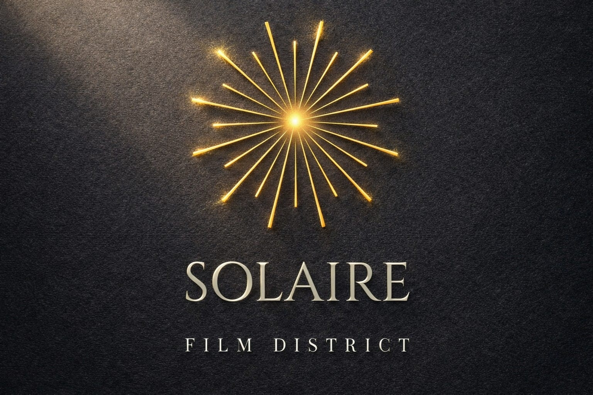

EN
Sustainable audiovisual production campus in development in Occitanie.
FR
Campus de production audiovisuelle durable en developpement en Occitanie.
A professional tool for the audiovisual industry
Designed as long-term infrastructure, Solaire Film District brings together sound stages, workshops, post-production and training within a structured, resilient and responsible environment.
Our objective is to create a professional tool aligned with international standards while integrating strong environmental, social and regional commitments.
Un outil professionnel pour l'audiovisuel
Concu comme une infrastructure perenne, Solaire Film District vise a reunir plateaux de tournage, ateliers, post-production et formation dans un environnement structure, resilient et responsable.
Notre objectif est de creer un outil professionnel repondant aux standards internationaux tout en integrant des criteres environnementaux, sociaux et territoriaux exigeants.